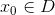
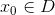

Derivate de ordin superior
Fie  ,
,  o funcție derivabilă în punctul  și numărul natural .
o funcție derivabilă în punctul  și numărul natural .
Definiția FD11 : Derivată de oridinul n
Spunem că funcția  are derivată de ordinul
are derivată de ordinul  în punctul
în punctul  dacă este derivabilă de ori și dacă există:
dacă este derivabilă de ori și dacă există:
.
Limita de mai sus se numește derivata de ordinul a funcției în punctul și o notăm cu .
Dacă , atunci funcția este derivabilă de ori (sau derivabilă de ordinul ) în punctul , iar dacă funcția este derivabilă în orice punct al domeniului de definiție , atunci spunem că funcția este derivabilă de ori.
Așadar avem relația: .
Pentru a afla derivata de ordinul a unei funcții în punctul , trebuie să derivăm derivata de ordinul a funcției.
Exemplu:
Fie funcția  ,
,  .
.
Derivata acestei funcții este:
Derivata a doua a funcției este:
.
Derivând încă o dată, obținem:
.
Derivata a patra va fi:
.
Continuând procedeul, vom putea obține derivata funcției de orice ordin. (ordin număr natural)
Observație:
A nu se confunda funcția putere , care este compusa de ori a funcției cu ea însăși ( adică ) cu , care este derivata de ordinul a lui în punctul .
Operații cu funcții derivabile de ordin superior
Operațiile cu funcții derivabile se pot da și pentru un ordin arbitrar, astfel:
Fie  , funcții derivabile de ori în punctul și numărul natural , iar
, funcții derivabile de ori în punctul și numărul natural , iar  un scalar.
un scalar.
- Adunarea funcțiilor derivabile de ordin superior
;
- Înmulțirea cu scalar a unei funcții de ordin superior
;
- Formula lui Leibniz
 ,
,
unde și este derivata de ordinul  al funcției.
al funcției.
În cazul în care  , se poate introduce noțiunea de derivată de ordinul al II-lea.
, se poate introduce noțiunea de derivată de ordinul al II-lea.
Derivate de ordinul al II-lea
Fie , o funcție derivabilă în punctul - punct de acumulare pentru domeniul funcției.
Definiția FD12: Derivata de ordinul al II-lea
Dacă  este derivabilă în , atunci spunem că funcția este de două ori derivabilă în punctul și notăm derivata de ordinul II în punctul cu .
este derivabilă în , atunci spunem că funcția este de două ori derivabilă în punctul și notăm derivata de ordinul II în punctul cu .
Astfel, dacă este de două ori derivabilă pe  (adică are derivata de ordinul II finită în orice punct al mulțimii), se poate defini funcția derivata a doua a lui :
(adică are derivata de ordinul II finită în orice punct al mulțimii), se poate defini funcția derivata a doua a lui :
, .
Exemplu:
Să de determine derivata a doua a funcției , .
Rezolvare:
Calculăm prima derivata a funcției.
.
Atunci derivata a doua va fi:
.